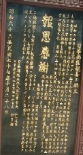

台湾へ行く前、老人会青年会に顔を出した。台湾旅行の話をすると、Fさんが「日月潭にもゆくのか」という。「おお、いかいでか」と返事すると、「あそこに三蔵法師の寺があるのを知ってるか？」という。
なんだか分からないので詳しく聞くと、
「自分も10年ほど前、日月潭へ行った。そのとき、案内の人に“この近くに三蔵法師の骨が祀ってある寺がある”と聞いた。しかし自分は時間がないので行けなかった」という。しかし1500年も前に唐の都（長安）で亡くなった玄奘三蔵の骨が台湾にあるとは思えない。そう云うと、
「う〜ん、自分も確かめたわけじゃないから....」
「そいじゃ、σ(-_-)が確かめてくる」
で 日月潭に云ったとき、さっそく その三蔵法師の寺へ向かった。すると湖畔のほとりの山の中腹に大きな寺があった。
寺の正式名は玄奘寺（げんじょうじ）で、たしかに西遊記に出てくる三蔵法師の名前と一致。（なるほど...）と思いつつ、立派な階段を上って境内へ。平日なので、観光客はチラホラ状態。本堂に参詣して蝋燭や線香をあげたりしていると、尼さんらしき人が片言の日本語で話しかけてきた（σ(-_-)が女房と話しているのを聞いて、日本人だと分かったらしい）。
「このお寺に玄奘法師の遺骨が祀られているそうですが」と聞くと、
「ええ、そうですよ。お見せはできませんけど...」
（やっぱりホントだったのか、でもどうして ここに....）
「せっかくみえたので、本堂の上階に登ってもいいですよ」
本堂は３階建てであるが、３階からの景色がまた一段と素晴らしいという。そこでさっそく３階に登り、素晴らしい景色を堪能した。そのあと境内へ出てあちこち見ていると、大きな碑が建っていた。

そこには「日中友好のため、昭和30（1950）年、玄奘三蔵の霊骨が日本から贈られた」みたいなことが書いてあった。ふ〜んと思ったが、今度は三蔵法師の遺骨がなんで日本にあったのか分からない...ワケワカメのまま玄光寺（げんこうじ）に向かった。玄光寺は日本から玄奘三蔵の遺骨が伝来したとき、最初に安置されていたお寺。のちに玄奘寺が建立され、遺骨はそっちに移されたという。
玄光寺は玄奘寺の下の方、というか日月潭に突き出た岬の突端にある。規模は玄奘寺の半分もないが、そこからの景色は一段とすばらしかった。
その玄光寺の本堂に、遺骨が台湾へもたらされた経緯を記した掲示板があった。そこには
日中戦争の頃（1942（S17）年）、南京の郊外で日本軍が工事をしたとき、古い石棺をみつけた。開けてみると人骨とともに石版などが入っていた。石版を調べてみると玄奘三蔵の遺骨であることが分かった。そこで遺骨が日本に渡り、埼玉県の慈恩寺に安置された。そして昭和30年、日中友好のため玄光寺へ分骨された。
という主旨のことが書いてあった。それでようやく遺骨が日本にも台湾にある理由が分かった。帰国してからFさんに「たしかに台湾には玄奘三蔵の遺骨があった」と報告したところ、「オレの云った通りだったろう」といたく満足。
落ち着いてから埼玉県の慈恩寺を検索してみると、もっと詳しい事情が分かった。
http://www.jionji.com/
詳しいことは慈恩寺のHPを見てもらえばいいが、要約すると こんな感じ。
1942（S17）年12月、南京を占領していた日本軍が稲荷神社を建立するため郊外の丘を整地中、石棺を発見。石棺には宋の天聖５年（1027）に玄奘三蔵の頂骨（頭骨）が演化大師
可政によって長安から南京に運ばれたと記されていた。南京に遺骨が運ばれたのは、副葬品をねらった盗掘などを防ぐためと思われる。
発見の翌年（1943=S18）、遺骨は仏像・銀などの副葬品と共に南京政府*1に還付された。霊骨の一部は日本に もたらされ、東京 芝の増上寺に安置された。1944（S19）年12月 空襲による損失を避けるため、埼玉県の慈恩寺に仮奉安された。やがて終戦を迎え、紆余曲折の後
慈恩寺が正式の安置場所となった。
1955（S30）年、中華民国（台湾省）仏教会から要請があり、台湾に分骨された。また1981（S56）年、法縁により 奈良の薬師寺にも分骨された。
*1 南京政府：時期や場所から考えると、汪兆銘率いる南京政府と思われ。
な〜るほど、そんなワケがあったのか。それにしても三蔵法師の遺骨が日本にも台湾にもあったとはち〜っとも知らなんだ。それにしても両方のお寺さんとも、もっとPRすればいいのに....こんど薬師寺か慈恩寺に、お参りにいってこよ。
|